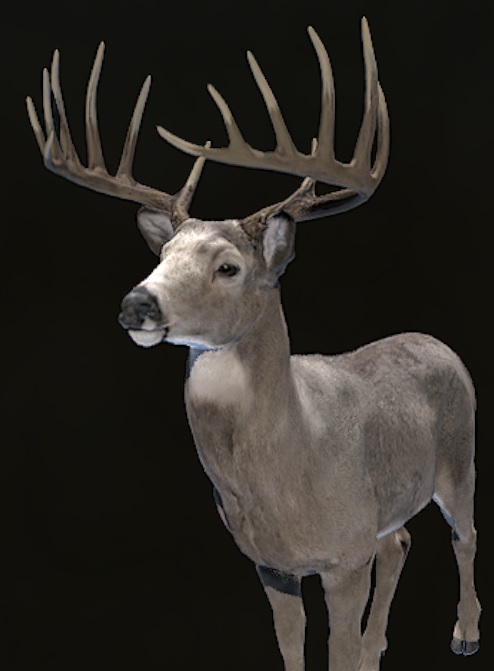
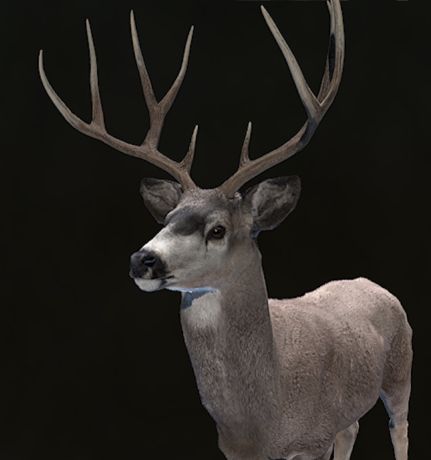
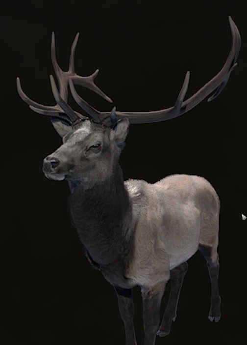

Ciervo de cola Blanca
es una especie de mamífero artiodáctilo de la familia de los cérvidos. Vive en diferentes ecosistemas de América, desde los canadienses, en la región subártica, pasando por los bosques secos de las laderas montañosas de México, las selvas húmedas tropicales de América Central y del Sur, hasta los bosques secos ecuatoriales del norte del Perú y otras áreas boscosas sudamericanas.

Sus principales depredadores son:
- Oso negro americano
- Lobo Gris
Link naturalista
Ciervo mulo
Debe su nombre a sus largas orejas, parecidas a las de una mula. Su pariente más próximo es el ciervo de cola blanca (Odocoileus virginianus). Las dos especies comparten a menudo hábitats naturales, y se pueden confundir uno con el otro. Las diferencias más específicas entre los dos son el color de sus colas, y sus cornamentas.

Link naturalista
Wapiti
es una especie de mamífero artiodáctilo de la familia de los cérvidos que vive en América del Norte, Asia central y oriental. Presenta algunas características propias que le diferencian de sus parientes eurasiáticos, es de gran tamaño (solo superado entre los cérvidos por el alce); además, los machos presentan una «melena» más o menos espesa en el cuello y tienen una tonalidad más clara en el cuerpo que en las patas, la cabeza y el cuello.

Link naturalista